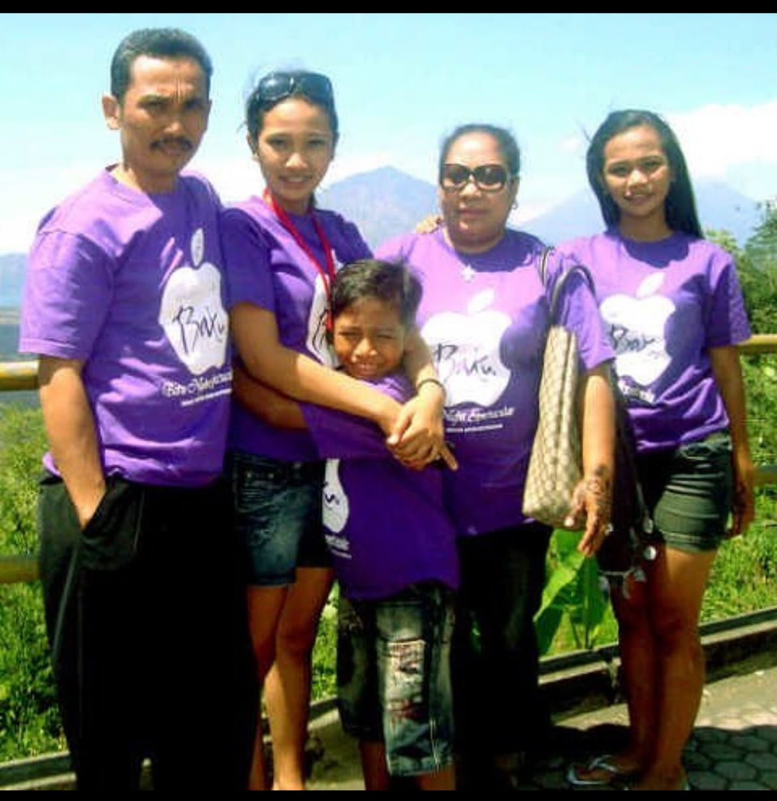
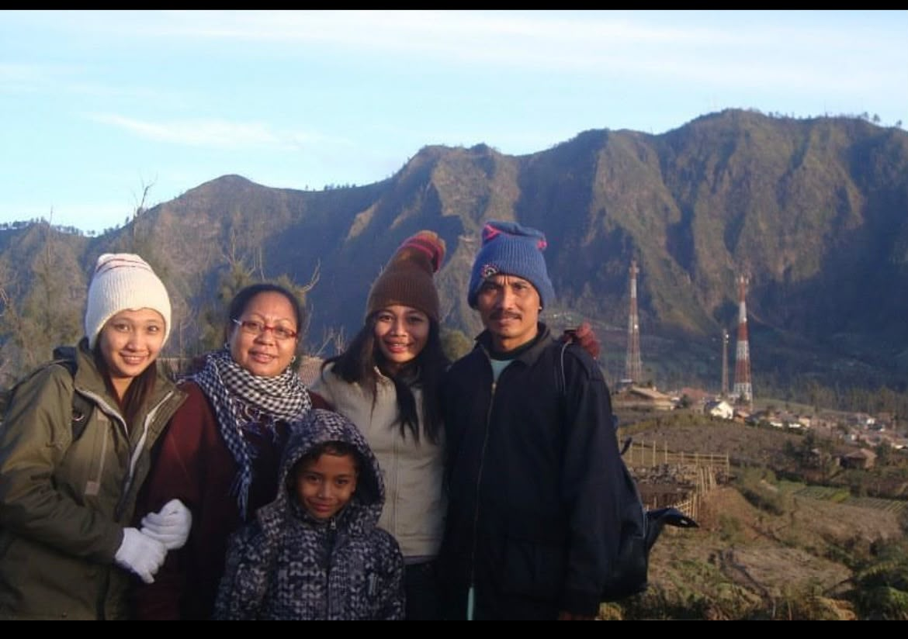
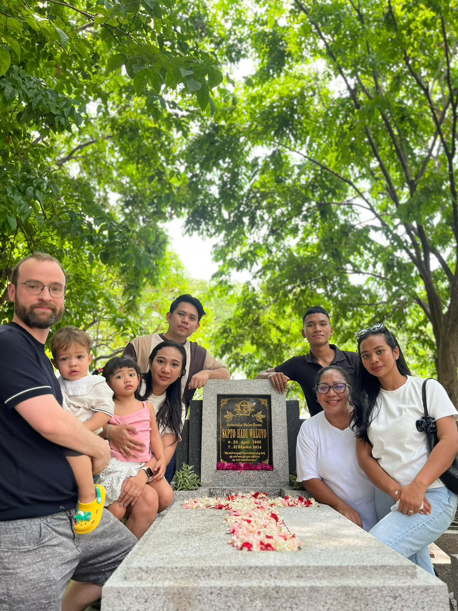
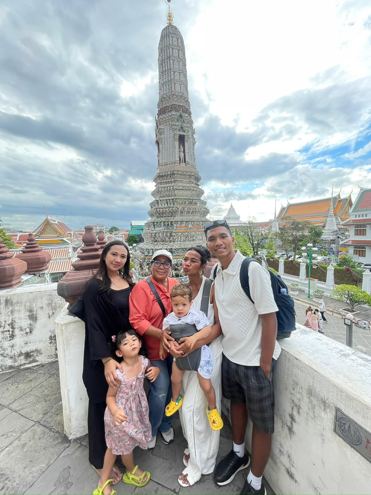

ABBA - Slipping Through My Fingers
Klik untuk putar musik 🎵
Ungkapan kasih dari si bungsu untuk Mama dan Mbak ku tercinta
Di tengah alurnya waktu, aku bersyukur tumbuh menjadi adik bontot yang selalu diberikan rasa cinta yang tulus. Website kecil ini adalah cermin rasa terima kasihku untuk setiap detik kebersamaan kita.
23 April 1965 – 31 Oktober 2014
"papa tidak pernah benar-benar pergi. papa selalu ada di setiap helai doa, di dalam senyuman mama, serta di dalam fondasi cinta dan kebaikan yang papa tinggalkan untuk kita semua."

Masa Kecil BersamaSejak kecil, berada di tengah-tengah Mama, Papa, dan Mbak-Mbak adalah tempat paling aman dan membahagiakan untukku.

Petualangan Masa Lalu

Cinta Yang Abadimiss you pa

Hari Ini & NantiSejauh mana pun kita melangkah dan mengejar mimpi, jalan pulang terbaik kita adalah kembali ke dalam pelukan Mama.
Klik tombol di bawah untuk membuka pesan penuh kasih dariku.
Untuk Mama:
Terima kasih telah menjadi tiang paling kokoh di dalam hidup kita. Makasih ma sudah kuat sejauh ini membesarkan kita semua. Dari sejak kita kecil yang selalu minta dipeluk hingga kita tumbuh sebesar ini, kasih sayang dan doa mama tidak pernah surut sedikit pun. mama adalah pahlawanku, tempatku mengadu, dan alasan utama aku selalu ingin memberikan yang terbaik.
Untuk Mbak-Mbakku:
Terima kasih sudah menjadi sosok kakak perempuan yang luar biasa membimbing, merawat, dan sabar menjaga adik mu ini. Kehadiran Mbak-Mbak membuat hidupku selalu berwarna dan penuh perlindungan.
Meskipun sekarang kita memiliki kesibukan dan cerita perjalanan masing-masing, ingatlah bahwa aku selalu sayang kalian.
Aku Sayang Kalian Semua ❤️
— Dari Si Bungsu
Sentuh tombol di bawah untuk memberikan senyuman dan taburan kebahagiaan.